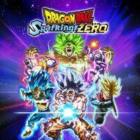
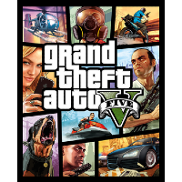
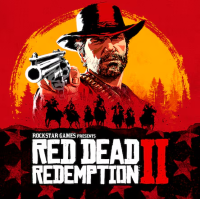
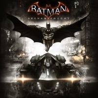
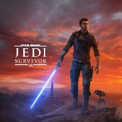
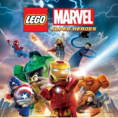

Esta página web consiste en hablar sobre mis videojuegos favoritos y el por qué lo son.
| Imagen |
Nombre |
Plataformas |
Descripción |
Opinión |
Nota |
|  |
Dragon Ball: Sparking! Zero |
- PlayStation 5
- Windows
- Xbox Series X/S
|
Dragon Ball: Sparking! Zero es un videojuego de lucha en 3D de alta velocidad, considerado la continuación de la serie Budokai Tenkaichi. El juego se caracteriza por combates espectaculares con efectos visuales detallados que honran al anime, escenarios destructibles que reaccionan a la batalla y un extenso elenco de personajes jugables con sus propias habilidades y transformaciones. Además de modos de historia, ofrece una gran libertad para que los jugadores creen y compartan sus propias peleas personalizadas. |
Este juego me parece muy bueno ya que al ser la continuación del Budokai Tenkaichi 3 (un juego que me encantaba de pequeño) y que sigue respetando la esencia original de la saga en la forma de hacer los combates más dinámicos y aprovechando las características de la nueva generación de consolas nos da una mejor experiencia que en entrgas pasadas. |
8/10 |
|  |
Grand Theft Auto V |
- PlayStation 3
- Xbox 360
- PlayStation 4
- Xbox One
- Windows
- PlayStation 5
- Xbox Series X/S
|
GTA 5 es la decimoquinta entrega de la saga de videojuegos de acción y aventura de mundo abierto Grand Theft Auto. Lanzado originalmente en 2013, el juego se desarrolla en la ciudad de Los Santos y sigue la historia de tres protagonistas: Michael, Trevor y Franklin. Además de su modo para un jugador, incluye el popular modo multijugador en línea, conocido como Grand Theft Auto Online. |
GTA V es uno de mis juegos favoritos debido a su mundo abierto, la profundidad de su narrativa y la libertad que ofrece al jugador. La posibilidad de cambiar entre tres personajes con historias entrelazadas le añade una capa de complejidad y riqueza al juego que lo hace destacar entre otros títulos. |
8,5/10 |
|  |
Red Dead Redemption II |
- PlayStation 4
- Xbox One
- Windows
- Stadia
|
Red Dead Redemption 2 se centra en 1899, cuando el Salvaje Oeste está llegando a su fin. Tras un atraco fallido en Blackwater, el protagonista Arthur Morgan y la banda de forajidos Van der Linde deben huir de la ley y los cazarrecompensas. La banda lucha por sobrevivir en el corazón de Estados Unidos, pero las divisiones internas aumentan, obligando a Arthur a decidir entre sus propios ideales y su lealtad a la banda. |
Solo puedo decir que... ME FASCINA ESTE JUEGO. La historia está escrita de tal manera que te atrapa desde el principio y los personajes son increíblemente profundos, la manera en la que te metes en la piel de Arthur Morgan y como vives su historia te deja sin palabras. |
10/10 |
 |
Marvel's Spider-Man 2 |
|
Marvel's Spider-Man 2 es un juego de acción y aventura para un jugador en el que se alternan los personajes de Peter Parker y Miles Morales para luchar contra villanos como Venom y Kraven el Cazador en un mundo abierto que incluye nueva York, Brooklyn y Queens. El juego cuenta con habilidades de simbionte para Peter y poderes bioeléctricos para Miles, y se beneficia de las características del mando de PlayStation 5 para una mayor inmersión. |
Es la continuación de Marvel's Spider-Man y Marvel's Spider-Man: Miles Morales, y expande la historia de una manera muy natural y brillante ya que añade profundidad a los personajes y sus relaciones. |
8/10 |
|  |
Batman: Arkham Knight |
- PlayStation 4
- Xbox One
- Windows
|
Batman: Arkham Knight es un juego de acción y aventura de 2015 y el capítulo final de la serie de Arkham, en el que Batman lucha contra el Espantapájaros y otros supervillanos en Gotham City. Por primera vez, los jugadores pueden controlar el Batmóvil, y el juego incluye la explorable Ciudad de Gotham y un sistema de combate mejorado. La trama gira en torno a la amenaza del Espantapájaros y la misteriosa aparición del Caballero de Arkham. |
Tremenda manera de cerrar esta trilogía de juegos tan icónica (una pena que la arruinasen con el siguiente juego). La manera en la que te puedes desplazar por toda Gotham ya sea con el Batmóvil o con el propio Batman planeando y enganchandote por los edificios es impresionante |
9/10 |
|  |
Star Wars: Jedi Survivor |
- PlayStation 5
- Xbox Series X/S
- Windows
- PlayStation 4
|
Star Wars: Jedi Survivor es un juego de acción y aventura en tercera persona que continúa la historia de Cal Kestis cinco años después de Fallen Order. El juego combina exploración en entornos expansivos con un combate que se basa en el uso de la Fuerza y el sable láser, ofreciendo nuevas habilidades y posturas de combate. |
Es un buen juego y continua de manera perfecta la historia de Fallen Order. Si que es verdad que algunas mecánicas se sienten un poco repetitivas, pero en general es una gran experiencia. |
7/10 |
|  |
Lego Marvel Super Heroes |
- PlayStation 3
- Xbox 360
- Windows
- Wii U
- PlayStation 4
- Xbox One
- Nintendo DS
- PlayStation Vita
- Nintendo 3DS
- Nintendo Switch
|
LEGO Marvel Super Heroes es un videojuego de acción-aventura que combina el universo Marvel con la jugabilidad de LEGO. La historia sigue a los superhéroes (como Iron Man, Spider-Man y Hulk) mientras intentan detener a Loki y otros villanos de construir un arma para destruir la Tierra. |
Mucha gente considera que los juegos de LEGO son malos por su jugabilidad repetitiva y su enfoque en la construcción en lugar de la acción, pero este juego nos demuestra que pese a ello es una experiencia divertida y entretenida. |
8/10 |